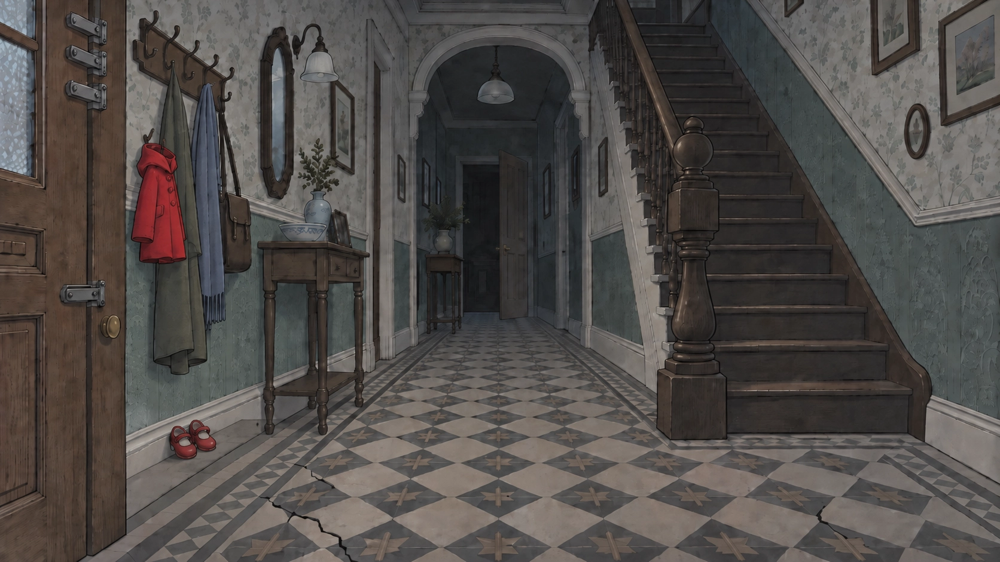
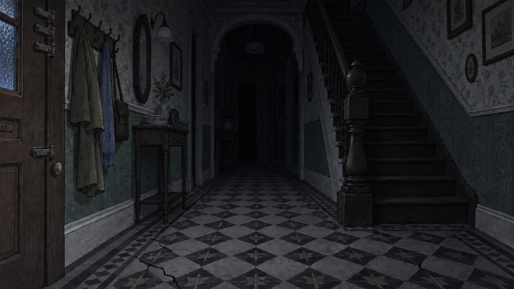

Don't Knock Back · 1 of 4 · Why we made it
Most horror games scare you when a monster jumps out. We wanted one that scares you when nothing is happening: a quiet hallway you no longer trust.
"The player should feel unsafe when nothing is happening."
Don't Knock Back · 2 of 4 · How we made it


Directed in plain English, with Claude Code (AI) writing the code and helping with the story. Art made from written briefs, chosen by eye.
Don't Knock Back · 3 of 4 · The progression
No horror, only funny.The quiet scares were too quiet. Scares got louder and the monster got shown.
More scary, I'm not scared.New scary music, real jumpscares, and hold-your-breath with your own finger.
Don't Knock Back · 4 of 4 · By the numbers